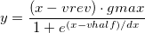
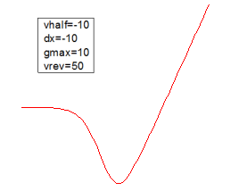

IVデータに対する変換済みボルツマン関数

数: 4
パラメータ名: vhalf, dx, gmax, vrev
意味: vhalf=center, dx=time constant, gmax=maximal conductance, vrev=reversal potential
下側境界: なし
上側境界: なし
nlf_boltziv(x,vhalf,dx,gmax,vrev)
FITFUNC\BOLYZIV.FDF
増加/シグモイド